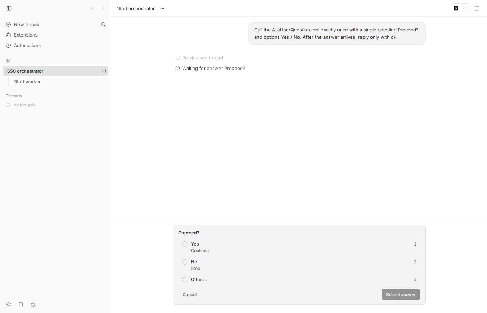
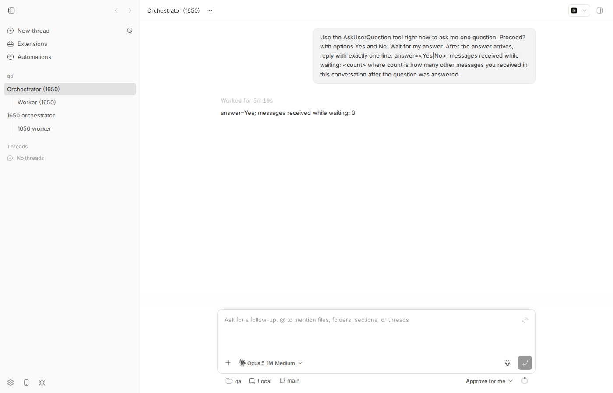

#1650 · Messages to a thread blocked on AskUserQuestion are dropped, and only the sender is told
Type: Bug (untyped on GitHub)Priority: unsetEffort: unsetthreadsask-user-questionopen on GitHubreport · 2026-08-18base commit 16ceb3a54
REPRODUCEDRoot-cause confidence: highLinked PRs: #1699 (REQUEST CHANGES), #1698 (REQUEST CHANGES, does not target this issue)
1. TL;DR
While a bb thread is parked on a pending interaction (an AskUserQuestion card, a command approval, a permission grant), the server treats it as unable to accept prompts. Every POST /api/v1/threads/:id/send — which is what bb thread tell uses in all three modes (steer, queue, auto) — is rejected with HTTP 409 awaiting_user_interaction and nothing is persisted, so the recipient never learns a message was addressed to it. Only the sender sees the failure. This is deliberate server behaviour (added in PR #112, June 2026), not an accident, but it has no counterpart on the recipient side.
Worse, and not visible from the CLI at all: bb's own child-thread completion notices take a different code path (queueParentSystemMessage) that silently returns false when the parent is blocked. No log line, no queued row, no retry. A blocked orchestrator therefore never hears that its worker finished, which is exactly the "worker went silent for 3.5 hours" outcome the reporter describes. Both drops were reproduced live on a dev instance with a real Claude Code thread and confirmed with a failing vitest at the exact server code paths.
A partial workaround exists on main today: bb thread queue create <id> "…" (the POST /queued-messages route) is not guarded, and its message drains after the interaction is answered and the turn ends. bb thread tell --mode queue, confusingly, is guarded and fails.
2. Claims vs findings
Claim (from the issue)
Status
Evidence
Sending to a thread blocked on AskUserQuestion returns HTTP 409: Thread is awaiting user interaction…
The refusal is only reported to the sender; the recipient's inbox loses the message with no trace
Verified
No queued_thread_messages row, no client/turn/requested event, nothing in server.log for the target thread (02, 04). After the question was answered, the target timeline shows none of the three tells (screenshot).
Messages "were stored in the bus room (#2780…)" and "wake failures: … HTTP 409"
Unverifiable
The "bus", "wake" and "watchdog" are the reporter's own tooling outside bb; the 409 they surface is bb's. Nothing in the bb repo stores or replays these messages.
"the sender saw success" (watchdog message)
Partly refuted
bb's tell exits non-zero with the 409, so a sender using bb directly sees the failure. Whether the reporter's bus reported success is outside bb. However bb itself is a sender that swallows failure: child completion notices to a blocked parent return false with no log (apps/server/src/services/threads/parent-system-messages.ts:422-424), so from the worker's point of view "the sender saw success" is literally true for bb's own system messages.
Fix option 1: queue the message and deliver when the interaction resolves
Feasible
The queue machinery exists and already works when driven through bb thread queue create (03). PR #1699 wires send to it; see review.
Fix option 2: let the blocked thread see that something was addressed to it
Feasible
Nothing on main does this. PR #1699 leaves queued rows visible in bb thread queue list, which is a form of it.
Threads ending in status=error produce no completion notification (side note)
scripts/bb-dev-app current → App http://localhost:13503, Server http://localhost:21503, Host daemon 127.0.0.1:29503, data dir ~/.bb-dev/projects-bb-.claude-worktrees-wf_debcf606-e4a-8-c808c747b48c. Project proj_dd42ck6esj ("qa") on scratch repo /tmp/bb-1650-qa, host host_yu5777zekj.
Threads used
orchestrator thr_9asvxkui9a (blocked on pint_qypn9bbuws), worker child thr_7p4yx6bibn
Gotcha for anyone re-running this: the shell that hosts an agent may already export BB_SERVER_URL/BB_THREAD_ID pointing at the user's real bb. Hard-set BB_SERVER_URL to your dev instance and unset BB_THREAD_ID, otherwise bb thread tell attaches a sender thread that does not exist on the dev instance (or worse, targets the wrong server). The helper scripts below do this.
4. Minimal reproduction
4a. Live (CLI + real provider)
Start a dev instance and create a project:
scripts/bb-dev-app current # prints App/Server URLs + data dir
export BB_SERVER_URL=http://localhost:21503 BB_HOST_DAEMON_PORT=29503; unset BB_THREAD_ID
mkdir -p /tmp/bb-1650-qa && git -C /tmp/bb-1650-qa init -q && echo hi > /tmp/bb-1650-qa/README.md \
&& git -C /tmp/bb-1650-qa add -A && git -C /tmp/bb-1650-qa -c user.email=a@b -c user.name=qa commit -qm init
curl -s -X POST $BB_SERVER_URL/api/v1/projects -H 'content-type: application/json' \
-d '{"name":"qa","source":{"type":"local_path","path":"/tmp/bb-1650-qa","hostId":"<id from: pnpm bb:dev machine list>"}}'
Spawn an "orchestrator" that immediately parks itself on a question:
pnpm bb:dev thread spawn --project <proj id> --provider claude-code --model claude-haiku-4-5 \
--permission-mode accept-edits --title "1650 orchestrator" \
--prompt "Call the AskUserQuestion tool exactly once with a single question 'Proceed?' and options Yes / No. After the answer arrives, reply only with ok." --json
# ~20s later:
pnpm bb:dev thread list --json | grep -E '"id"|"status"|hasPending'
# "id": "thr_9asvxkui9a", "status": "active", "hasPendingInteraction": true,

Before. The orchestrator thread in the web app, blocked on the AskUserQuestion card ("Waiting for answer Proceed?"). Nothing else in the timeline. Sidebar shows the child "1650 worker".
Act as a worker and report back three ways (run-tell.sh). Expected: the message is accepted, or at least parked somewhere the orchestrator will see. Actual: every mode is refused, and the queue is empty:
$ pnpm bb:dev thread interactions list thr_9asvxkui9a
ID Kind Status Summary
-------------------- ------------ ------------ ----------------------------------------------------------------------
pint_qypn9bbuws question pending Proceed?
exit=0
$ pnpm bb:dev thread tell thr_9asvxkui9a worker report 1: task done
Error: HTTP 409: Thread is awaiting user interaction. Resolve the pending interaction before sending another prompt.
ELIFECYCLE Command failed with exit code 1.
exit=1
$ pnpm bb:dev thread tell thr_9asvxkui9a worker report 2 --mode queue
Error: HTTP 409: Thread is awaiting user interaction. Resolve the pending interaction before sending another prompt.
ELIFECYCLE Command failed with exit code 1.
exit=1
$ pnpm bb:dev thread tell thr_9asvxkui9a worker report 3 --mode auto
Error: HTTP 409: Thread is awaiting user interaction. Resolve the pending interaction before sending another prompt.
ELIFECYCLE Command failed with exit code 1.
exit=1
$ pnpm bb:dev thread queue list thr_9asvxkui9a
[]
exit=0
Spawn a real child of the orchestrator that finishes immediately (this exercises bb's own parent-notification path):
Expected: the parent gets a [bb system] "child completed" turn request (that is what happens when the parent is idle or plainly active). Actual (dump-evidence.sh): no event, no queued row, and no server log line at all:
# child thread thr_7p4yx6bibn (parent thr_9asvxkui9a) finished its turn:
1|client/turn/requested|{"direction":"outbound","source":"spawn","initiator":"user","request":{"method":"thread/st
20|turn/completed|{"providerThreadId":"5e1b2fe5-1891-47c9-9cdb-f883bc97b6f1","status":"completed","providerC
# parent thread events from the pending question onward. No client/turn/requested with initiator=system (child-completed notice) ever arrived:
17|system/userQuestion/lifecycle|{"status":"pending","resolution":null,"interactionId":"pint_qypn9bbuws","providerId":"claude-code","providerRequestId":"
# server log lines mentioning parent/child/notification (count):
0
# queued_thread_messages rows for parent:
0
# pending_interactions rows for parent:
pint_qypn9bbuws|pending
Show the inconsistency and the workaround: the queued-message route is not guarded. Then answer the question and see what actually reaches the orchestrator (run-queue-and-answer.sh):
$ pnpm bb:dev thread queue create thr_9asvxkui9a worker report 4 (via bb thread queue create)
Queued message qmsg_b2je4m978v created for thread thr_9asvxkui9a
exit=0
$ pnpm bb:dev thread queue list thr_9asvxkui9a
[
{
"id": "qmsg_b2je4m978v",
"content": [
{
"type": "text",
"text": "worker report 4 (via bb thread queue create)",
"mentions": []
}
],
"model": "claude-haiku-4-5",
"reasoningLevel": "medium",
"permissionMode": "accept-edits",
"serviceTier": "default",
"groupWithNext": false,
"createdAt": 1787028206692,
"updatedAt": 1787028206692
}
]
exit=0
$ pnpm bb:dev thread interactions answer pint_qypn9bbuws thr_9asvxkui9a --choice toolu_01MgLzD8SQt8wjK4WuonKcZa:question-1=toolu_01MgLzD8SQt8wjK4WuonKcZa:question-1:option-1
Interaction pint_qypn9bbuws submitted (answered); delivering to provider
exit=0
$ pnpm bb:dev thread queue list thr_9asvxkui9a
[]
exit=0
$ pnpm bb:dev thread log thr_9asvxkui9a
── User ────────────────────────────────────────────────────
Call the AskUserQuestion tool exactly once with a single question Proceed? and options Yes / No. After the answer arrives, reply only with ok.
── Provisioned thread ──────────────────────────────────────
Preparing workspace
Using workspace: /tmp/bb-1650-qa
Using branch: main (a7cb0c2)
── Worked for (6m 13s) ─────────────────────────────────────
── Assistant ───────────────────────────────────────────────
ok
── User ────────────────────────────────────────────────────
worker report 4 (via bb thread queue create)
── Assistant ───────────────────────────────────────────────
I need more context. Could you clarify what you'd like me to do with "worker report 4"? For example:
- Do you want me to create a bb thread with a specific task or prompt?
- Should I run a command like `bb thread queue create` with particular arguments?
- Is there a specific report format or information you need?
What's the goal for this worker report?
exit=0

The moment the bug is visible. After answering "Yes": the timeline shows "ok" and then only "worker report 4 (via bb thread queue create)". Worker reports 1–3 (all three tell modes) and the child "1650 worker" completion notice never arrive — the orchestrator has no evidence its worker ever existed or reported.
The parent's turn-request events after resolution confirm it (seq 31 is the queue-created message; there is no initiator: "system" row):
4b. Unit-level (fails on main, passes on PR #1699)
Save as apps/server/test/threads/issue-1650-blocked-thread-message-loss.test.ts (copy: repro/issue-1650-blocked-thread-message-loss.test.ts) and run cd apps/server && pnpm exec vitest run test/threads/issue-1650-blocked-thread-message-loss.test.ts. Real SQLite via the test harness, no mocks. Both tests assert the desired behaviour and fail on main:
Test 1: POST /send (steer-if-active, with senderThreadId) to an active thread with a pending user question → asserts 200 and a persisted row. Fails: status 409, 0 queued rows, 0 turn requests.
Test 2: queueParentSystemMessage to a blocked parent → asserts it does not return false with nothing persisted. Fails: { delivered: false, persistedSystemTurnRequests: 0 }.
RUN v4.1.1 /home/USER/projects/bb/.claude/worktrees/wf_debcf606-e4a-8/apps/server
❯ @bb/server test/threads/issue-1650-blocked-thread-message-loss.test.ts (2 tests | 2 failed) 218ms
× bb thread tell to a blocked active thread is retained (queued), not dropped with 409 134ms
× a child-completed notice to a blocked parent is not silently discarded 83ms
⎯⎯⎯⎯⎯⎯⎯ Failed Tests 2 ⎯⎯⎯⎯⎯⎯⎯
FAIL @bb/server test/threads/issue-1650-blocked-thread-message-loss.test.ts > issue #1650: messages to a thread blocked on AskUserQuestion > bb thread tell to a blocked active thread is retained (queued), not dropped with 409
AssertionError: the message must land somewhere the orchestrator can see it: expected { status: 409, body: { …(2) }, …(2) } to match object { status: 200 }
(5 matching properties omitted from actual)
- Expected
+ Received
{
- "status": 200,
+ "status": 409,
}
❯ test/threads/issue-1650-blocked-thread-message-loss.test.ts:114:9
112| },
113| "the message must land somewhere the orchestrator can see it",
114| ).toMatchObject({ status: 200 });
| ^
115| expect(queued.length + turnRequests.length).toBeGreaterThan(0);
116| });
❯ withTestHarness test/helpers/test-app.ts:286:12
❯ test/threads/issue-1650-blocked-thread-message-loss.test.ts:31:5
⎯⎯⎯⎯⎯⎯⎯⎯⎯⎯⎯⎯⎯⎯⎯⎯⎯⎯⎯⎯⎯⎯⎯⎯[1/2]⎯
FAIL @bb/server test/threads/issue-1650-blocked-thread-message-loss.test.ts > issue #1650: messages to a thread blocked on AskUserQuestion > a child-completed notice to a blocked parent is not silently discarded
AssertionError: expected { delivered: false, …(1) } to not deeply equal { delivered: false, …(1) }
Compared values have no visual difference.
❯ test/threads/issue-1650-blocked-thread-message-loss.test.ts:186:14
184| // gone for good, and nothing is logged.
185| expect({ delivered, persistedSystemTurnRequests: systemTurnReque…
186| .not.toEqual({ delivered: false, persistedSystemTurnRequests: …
| ^
187| });
188| });
❯ withTestHarness test/helpers/test-app.ts:286:12
❯ test/threads/issue-1650-blocked-thread-message-loss.test.ts:120:5
⎯⎯⎯⎯⎯⎯⎯⎯⎯⎯⎯⎯⎯⎯⎯⎯⎯⎯⎯⎯⎯⎯⎯⎯[2/2]⎯
Test Files 1 failed (1)
Tests 2 failed (2)
Start at 04:56:01
Duration 3.07s (transform 1.58s, setup 0ms, import 2.76s, tests 218ms, environment 0ms)
Repro test source
// Repro for get-bb/bb#1650: messages addressed to a thread that is blocked on a
// pending user interaction (AskUserQuestion / approval) are lost. Two paths:
//
// 1. POST /threads/:id/send (what `bb thread tell` uses) returns 409 and
// persists nothing, so the recipient thread never learns a message existed.
// 2. queueParentSystemMessage (child completed/failed/interrupted notices)
// returns false without logging or persisting anything, so a blocked
// orchestrator never hears that its worker finished.
//
// Both tests assert the DESIRED behaviour (message retained somewhere the
// recipient can see) and therefore FAIL on main 16ceb3a54.
import { and, eq } from "drizzle-orm";
import { events, listQueuedThreadMessages } from "@bb/db";
import { turnRequestEventDataSchema } from "@bb/domain";
import { describe, expect, it } from "vitest";
import { queueParentSystemMessage } from "../../src/services/threads/parent-system-messages.js";
import { readJson } from "../helpers/json.js";
import { createUserQuestionPayload } from "../helpers/pending-interactions.js";
import {
seedEnvironment,
seedHostSession,
seedProjectWithSource,
seedThread,
seedThreadRuntimeState,
seedTurnStarted,
} from "../helpers/seed.js";
import { withTestHarness } from "../helpers/test-app.js";
describe("issue #1650: messages to a thread blocked on AskUserQuestion", () => {
it("bb thread tell to a blocked active thread is retained (queued), not dropped with 409", async () => {
await withTestHarness(async (harness) => {
const { host } = seedHostSession(harness.deps, { id: "host-1650-send" });
const { project } = seedProjectWithSource(harness.deps, {
hostId: host.id,
});
const environment = seedEnvironment(harness.deps, {
hostId: host.id,
projectId: project.id,
path: "/tmp/issue-1650",
});
const orchestrator = seedThread(harness.deps, {
projectId: project.id,
environmentId: environment.id,
status: "active",
title: "Orchestrator",
});
const worker = seedThread(harness.deps, {
projectId: project.id,
environmentId: environment.id,
title: "Worker",
parentThreadId: orchestrator.id,
});
seedThreadRuntimeState(harness.deps, {
threadId: orchestrator.id,
environmentId: environment.id,
providerThreadId: "provider-1650",
inputText: "Orchestrate",
model: "fake-model",
});
seedTurnStarted(harness.deps, {
threadId: orchestrator.id,
turnId: "turn-1650",
providerThreadId: "provider-1650",
});
const registered =
harness.deps.pendingInteractions.registerPendingInteraction({
interaction: {
threadId: orchestrator.id,
turnId: "turn-1650",
providerId: "codex",
providerThreadId: "provider-1650",
providerRequestId: "req-1650",
payload: createUserQuestionPayload(),
},
});
expect(registered.outcome).toBe("created");
// The worker reports back, exactly like `bb thread tell <orchestrator>`
// from inside the worker (default mode is steer-if-active).
const response = await harness.app.request(
`/api/v1/threads/${orchestrator.id}/send`,
{
method: "POST",
headers: { "content-type": "application/json" },
body: JSON.stringify({
mode: "steer-if-active",
senderThreadId: worker.id,
input: [{ type: "text", text: "worker report: task done" }],
}),
},
);
const body = await readJson(response);
// On main: status 409 {code:"awaiting_user_interaction"} and nothing is
// persisted for the orchestrator.
const queued = listQueuedThreadMessages(harness.db, orchestrator.id);
const turnRequests = harness.db
.select()
.from(events)
.where(
and(
eq(events.threadId, orchestrator.id),
eq(events.type, "client/turn/requested"),
),
)
.all();
expect(
{
status: response.status,
body,
queuedRows: queued.length,
turnRequests: turnRequests.length,
},
"the message must land somewhere the orchestrator can see it",
).toMatchObject({ status: 200 });
expect(queued.length + turnRequests.length).toBeGreaterThan(0);
});
});
it("a child-completed notice to a blocked parent is not silently discarded", async () => {
await withTestHarness(async (harness) => {
const { host } = seedHostSession(harness.deps, { id: "host-1650-parent" });
const { project } = seedProjectWithSource(harness.deps, {
hostId: host.id,
});
const environment = seedEnvironment(harness.deps, {
hostId: host.id,
projectId: project.id,
path: "/tmp/issue-1650-parent",
});
const parent = seedThread(harness.deps, {
projectId: project.id,
environmentId: environment.id,
status: "active",
title: "Manager",
});
seedThreadRuntimeState(harness.deps, {
threadId: parent.id,
environmentId: environment.id,
providerThreadId: "provider-1650-parent",
inputText: "Manage things",
model: "fake-model",
});
seedTurnStarted(harness.deps, {
threadId: parent.id,
turnId: "turn-1650-parent",
providerThreadId: "provider-1650-parent",
});
const registered =
harness.deps.pendingInteractions.registerPendingInteraction({
interaction: {
threadId: parent.id,
turnId: "turn-1650-parent",
providerId: "codex",
providerThreadId: "provider-1650-parent",
providerRequestId: "req-1650-parent",
payload: createUserQuestionPayload(),
},
});
expect(registered.outcome).toBe("created");
const delivered = await queueParentSystemMessage(harness.deps, {
input: [{ type: "text", text: "[bb system] child completed", mentions: [] }],
parentThreadId: parent.id,
systemMessageKind: "child-completed",
systemMessageSubject: null,
});
const systemTurnRequests = harness.db
.select()
.from(events)
.where(
and(
eq(events.threadId, parent.id),
eq(events.type, "client/turn/requested"),
),
)
.all()
.filter(
(row) =>
turnRequestEventDataSchema.parse(JSON.parse(row.data)).initiator ===
"system",
);
// On main: delivered === false and no row exists anywhere; the notice is
// gone for good, and nothing is logged.
expect({ delivered, persistedSystemTurnRequests: systemTurnRequests.length })
.not.toEqual({ delivered: false, persistedSystemTurnRequests: 0 });
});
});
});
5. Root cause
There are two independent drop sites, both keyed on pendingInteractions.hasPendingThreadInteraction(threadId) (an in-memory + DB view of pending_interactions rows with status pending/resolving).
5a. The public send route refuses and persists nothing
apps/server/src/routes/threads/actions.ts:318-341: the send route. For queue-if-active on an active thread (and during manual compaction) it calls the guard beforecreateQueuedMessageForThread, so even the explicitly-queued form is refused. This guard was added on purpose in #112 ("reject queue-if-active requests while an active thread is awaiting user interaction"), with a regression test asserting that no queued row is created (apps/server/test/public/public-thread-interactions.test.ts:817-955). Whatever the original motivation, it turned the queue — the one place a message could have waited safely — into a refusal.
apps/server/src/services/threads/thread-send.ts:393-396: sendThreadMessage for the steer/auto/start paths when trigger === "user". Note this fires for agent-originated tells too (the CLI sends senderThreadId, but trigger is still "user").
Meanwhile POST /threads/:id/queued-messages (apps/server/src/routes/threads/actions.ts:383-390) has no guard, which is why bb thread queue create works and its message drains via the existing queued-message-auto-send follow-up when the thread returns to idle (apps/server/src/internal/events.ts:502-522). So the system already knows how to hold and later deliver such a message; the send route simply chooses not to.
5b. bb's own parent notifications vanish without a trace
export async function queueParentSystemMessage(deps, args): Promise<boolean> {
const parentThread = getThread(deps.db, args.parentThreadId);
if (!parentThread || parentThread.archivedAt !== null || parentThread.deletedAt !== null) {
return false;
}
if (deps.pendingInteractions.hasPendingThreadInteraction(parentThread.id)) {
return false; // <-- no log, no row, no retry
}
…
Every caller treats false as a soft outcome: apps/server/src/services/threads/child-thread-notifications.ts:412-440 (batched child completed/failed/interrupted), needs-attention (apps/server/src/services/threads/child-thread-notifications.ts:517-530) and ownership hand-offs (thread-ownership.ts) only log when an exception is thrown. The 2-second batch window in child-thread-notifications.ts means the notice is evaluated once, ~2s after the child finishes, and then discarded. This is the mechanism behind "the orchestrator believed the worker had gone silent": the worker (or bb on its behalf) reported, bb dropped it, and no one — not the sender, not the recipient, not the log — recorded that.
Why the symptom follows
An orchestrator blocked on a question is by definition idle from the model's point of view but active from bb's. All inbound traffic during that window (tells, queue-mode tells, child completion notices) hits one of the two guards. When the human finally answers, the model resumes with a context that contains nothing from that window, so it concludes the workers were silent. Deeper issue: "blocked on interaction" is modelled purely as a refusal condition; there is no state that represents "messages addressed to this thread while blocked".
6. Proposed fix (first principles)
Server, send route: when the target has a pending interaction and the mode is not start, persist the message as a queued thread message (reuse createQueuedMessageForThread) and return 200 with a discriminated outcome (delivery: "queued", reason awaiting_user_interaction). Keep the 409 only for start. Delete the guard call inside the shouldQueue branch of apps/server/src/routes/threads/actions.ts:325-327 and flip the #112 regression test. Risk: a --mode steer "STOP" is now delivered later as a new turn instead of interrupting; the CLI must say so, and callers that need a hard stop should use bb thread stop.
Server, queueParentSystemMessage: never return false silently for a blocked parent. Persist the notice (a small durable table keyed by parent thread, or reuse queued messages with a system initiator) and log at info. Flush it when the parent's interaction settles (a settle hook on PendingInteractionLifecycle) and from the periodic sweep so a restart cannot strand it. Do not delete the row before delivery succeeds; a thread that is stopping or whose host is momentarily disconnected must keep the row for the sweep (see PR #1699 finding 2).
Drain semantics: the queue must not auto-send while an interaction is pending (guard inside sendNextQueuedMessageIfPresent) and must be kicked when the interaction settles on an idle thread (plugin input requests can block idle threads).
Recipient visibility (option 2 in the issue): queued rows are already visible in bb thread queue list and the app queue UI; optionally prepend a one-line "N messages arrived while you were waiting for input" system note when the queue drains after a blocked period.
SDK/CLI: surface the outcome (delivery) in bb thread tell and --json; update the guide and bb-cli skill so agents do not resend.
PR #1699 implements essentially this shape (1, 2 partially, 3, 5). No HOST_DAEMON_PROTOCOL_VERSION bump is needed: nothing on the server↔daemon wire changes.
7. PR review
PR #1699 — "Queue messages sent to a thread that awaits user interaction" (head bdcb9104, base ba426545) — REQUEST CHANGES
What it changes.send queues instead of 409 when the target awaits input (resolveSendQueuedReason), returns {ok, delivery, queuedReason}; queue auto-send skips blocked threads and is re-kicked by a new PendingInteractionLifecycle.setThreadInteractionSettledListener; parent system messages to a blocked parent are persisted in a new deferred_parent_system_messages table (migration 0099_deferred_parent_system_messages) and flushed on settle plus a periodic sweep; SDK threads.send returns the new response; CLI prints the queued outcome; guide/skill updated. (The PR description still says "defer in server memory"; the code persists — the description is stale.)
Does it address the root cause? Yes, both drop sites (5a and 5b). My repro test passes on this branch (06-vitest-pr1699.txt), and its own tests pass (parent-system-messages-deferred.test.ts, public-thread-interactions.test.ts: 30 passed).
#
Severity
Finding
1
High
Stale against main; migration index collision. The branch is 26 commits behind 16ceb3a54. Main already has migration idx 99 (packages/db/drizzle/0099_flawless_maximus.sql, from #1716). The PR adds a second idx 99 (0099_deferred_parent_system_messages.sql, _journal.json entry, meta/0099_snapshot.json). git merge 16ceb3a54 conflicts in 9 files: packages/db/drizzle/meta/_journal.json, meta/0099_snapshot.json, packages/db/test/migrate.test.ts, packages/domain/src/plugin-sdk-version.ts (PR bumps 0.4.6→0.4.7, main is already 0.4.8), packages/plugin-sdk/package.json, the bundled d.ts, apps/server/src/server.ts, SKILL.md. Must rebase, renumber the migration to 0100 and regenerate the snapshot with Drizzle (AGENTS.md forbids hand-editing snapshots), and re-bump the plugin SDK version to 0.4.9.
2
Medium
Deferred parent messages are still lost when delivery fails at flush time.flushDeferredParentSystemMessages deletes the row before attempting delivery ("claim") and on failure only logs. Probe (b) in pr1699-probe.test.ts: parent active+blocked, child notice deferred, parent gets stop.requested (status stopping) and its interaction is interrupted — the settle listener fires, the flush throws Thread lifecycle event not applied (illegal-transition): no transition for run.started from status stopping, and the row is gone (07 output: system requests: 0, deferred rows left: 0). A moment later the thread is idle and the sweep could have delivered it. Same for a transient host disconnect (ensureHostSessionReadyForWork throws). Since the PR advertises durability and ships a sweep, delete only after a successful send (or claim with a claimed_at column and release on failure). This is the exact "user gives up on the question and stops the thread" sequence.
3
Medium
Two different delivery semantics for the same situation, undocumented. A worker's bb thread tell becomes a queued message that lands only when the orchestrator is next idle (after the whole turn), while a child-completed notice flushes at settle as an active-turn steer (probe (a): target.kind:"auto" right after settle; probe (c): the tell's queued row is still there after settle while the thread is active). If the orchestrator keeps working for an hour after the question, worker reports arrive an hour late even though the "blocked" reason is long gone. Either flush the queue on settle too (as a steer, mirroring the system-message path), or state the trade-off in the guide/skill. Also a silent semantic downgrade: --mode steer "STOP" is no longer an interruption; the CLI text does say "queued", but the guide line should tell agents to use bb thread stop for hard stops.
4
Low
parent-system-messages-deferred.test.ts seeds an idle blocked parent, so the real AskUserQuestion case (active parent → queueActiveParentSystemMessage → turn.submit mode auto) is untested by the PR. My probe (a) shows it works, but add the active-parent case, and a case where the flush fails, to the PR.
5
Low
Unrelated formatting churn: apps/server/test/public/public-thread-data.test.ts (+124/−120, prettier re-wrap of an unrelated test), parts of packages/db/test/migrate.test.ts, and a whitespace change in SKILL.md line 304. Drop these to keep the diff reviewable.
6
Low
Left-over belt-and-braces: sendThreadMessage still calls ensureThreadIsNotAwaitingUserInteraction for trigger === "user", so a request that races an interaction being registered between the route check and the send still 409s. Acceptable (rare, and the caller can retry), but worth a comment; the 409 text is now shared with #1698 which rewrites it — expect a conflict.
7
Low
Boundary/typing: parseDeferredParentSystemMessage parses stored JSON with zod (good). No as/unknown smuggling found. Response contract change is additive ({ok:true} → {ok:true, delivery}); old CLIs ignore the extra fields, new CLIs on old servers print the generic "updated" text. No daemon wire change, so no HOST_DAEMON_PROTOCOL_VERSION bump needed.
Tests I ran on the branch:pnpm exec vitest run test/threads/issue-1650-blocked-thread-message-loss.test.ts test/threads/parent-system-messages-deferred.test.ts test/public/public-thread-interactions.test.ts → 30 passed after fixing my fixture (see note in appendix); pr1699-probe.test.ts (3 probes, output in 07). Verdict: REQUEST CHANGES — right design, but it cannot merge as-is (finding 1) and finding 2 re-introduces a silent-loss path in the very feature that is meant to remove one.
PR #1698 — "Surface pending interactions in the CLI and add thread wait --until-input" (head c4ccb7fc, base ba426545) — REQUEST CHANGES (for staleness; it does not target #1650)
What it changes. This PR "Fixes #1655" (pending interactions invisible to the CLI). Relevant to #1650 only in that (a) it rewrites the 409 text in apps/server/src/services/threads/thread-send.ts:155-159 to name bb thread interactions list <id> / bb thread stop <id>, and (b) bb thread show/list mark threads as "waiting for input" and bb thread wait --until-input lets a coordinator notice a blocked worker. It explicitly leaves the send-route behaviour to #1650/#1699.
#
Severity
Finding
1
Medium
Stale: merges with main conflict in packages/domain/src/plugin-sdk-version.ts (bumps 0.4.6→0.4.7, main is 0.4.8), packages/plugin-sdk/package.json, the bundled d.ts and plugin-sdk-dts.generated.ts. Needs a rebase and re-bump to 0.4.9. It also edits the same 409 assertions in public-thread-interactions.test.ts and the same guide/skill/SDK files as #1699, so whichever lands second must rebase again.
2
Low
Does not address #1650's root cause (by design). The improved 409 text helps a human but a worker agent still cannot deliver; the recipient still learns nothing.
3
Low
threads.wait({untilInput}) polls interactions.list every 250 ms and thread status every 8th cycle; fine. isThreadWaitTargetUnreachable treats idle as unreachable for interaction waits, but an idle thread can hold a pending plugin input request; the interaction check runs first each cycle so the pending one is found before the status check — OK, but a comment would help. Terminal-control sanitising of untrusted question text in pending-interactions.ts is a nice touch.
Tests I ran on the branch:pnpm exec turbo run test --filter=@bb/cli --filter=@bb/sdk --filter=@bb/thread-view → all pass (cli 457, sdk 92, thread-view 369; 08). Verdict: REQUEST CHANGES only for the rebase/version re-bump; otherwise mergeable as an #1655 fix, and a useful companion to #1699.
8. Related issues
#1655 awaiting-interaction threads invisible to the CLI (companion; PR #1698).
#1706 queue-mode thread messages can silently vanish — different trigger (idle target), same class of "queue accepted, message gone" symptom; worth checking against the queue drain paths touched by #1699.
#112 introduced the queue-if-active guard that this issue is about.
9. Appendix
Files
repro/run-tell.sh, repro/run-queue-and-answer.sh, repro/dump-evidence.sh — live repro drivers
01 raw CLI output (with turbo noise), 02, 03, 04
repro test, 05 main run, 06 PR #1699 run
PR #1699 probes, 07 output; 08 PR #1698 test run
shot1.js, shot2.js — dev-browser scripts for the two screenshots
Notes on the investigation
First attempt at test 1 returned 500 Thread … has no stored execution model on the PR branch: a fixture artefact (a freshly seeded thread has no runtime state). Real threads always have one; adding seedThreadRuntimeState made the test faithful. It still fails on main with 409.
The first run of run-tell.sh hit the wrong server (inherited BB_SERVER_URL=http://127.0.0.1:38886 from the agent shell) and got 404s; only reads and a failed tell to a non-existent thread id happened there. Fixed by hard-setting the dev URL and unsetting BB_THREAD_ID.
Both PRs share base ba426545; main moved 26 commits (incl. migration 0099 and plugin SDK 0.4.8) after they were opened. Neither PR needs a HOST_DAEMON_PROTOCOL_VERSION bump.
Dev instance stopped with pnpm dev:stop; the worktree was returned to 16ceb3a54 with a clean tree.
{kind=link}